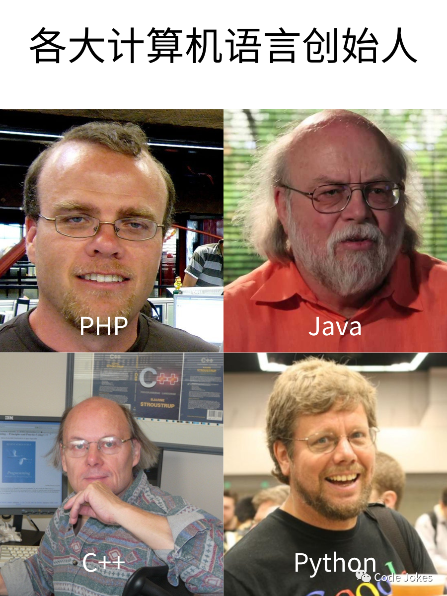
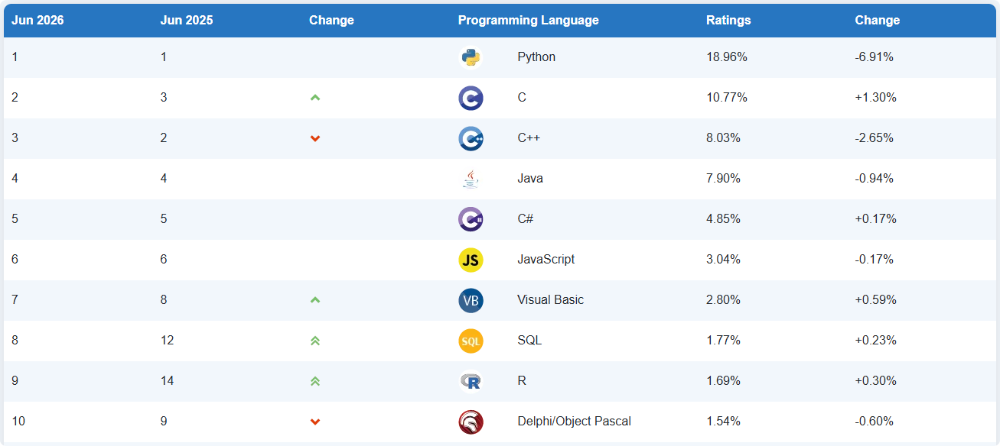
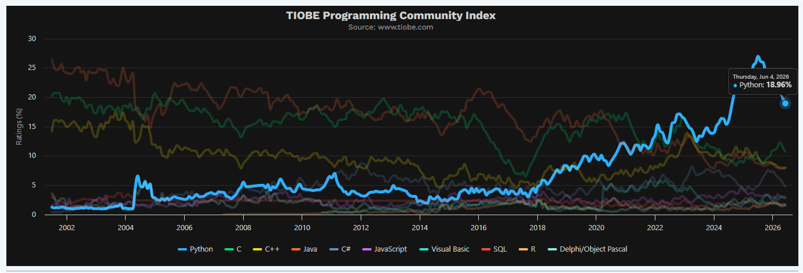

<!DOCTYPE lake>
<p data-lake-id="ud5269deb" id="ud5269deb"><span data-lake-id="u0018dfb7" id="u0018dfb7">Python是著名的“龟叔”吉多·范罗苏姆(Guido van Rossum) 在1989年圣诞节期间，为了打发无聊的圣诞节而编写的一个编程语言。</span></p><p data-lake-id="ufe9aab07" id="ufe9aab07"></p><h1 data-lake-id="MmsK8" data-lake-index-type="2" id="MmsK8"><span data-lake-id="ube93718d" id="ube93718d">为什么要学python</span></h1><p data-lake-id="u39771ada" id="u39771ada"></p><h2 data-lake-id="r4Lfi" id="r4Lfi"><span data-lake-id="u456cacc0" id="u456cacc0">编程语言排行</span></h2><p data-lake-id="uae1524e2" id="uae1524e2"><span data-lake-id="u36dd875f" id="u36dd875f">Python是目前（2026年6月）编程语言排行榜排名第一的语言：</span></p><p data-lake-id="u10e8427d" id="u10e8427d"><a data-lake-id="ude5bd146" href="https://www.tiobe.com/tiobe-index/" id="ude5bd146" rel="noopener noreferrer" target="_blank"><span data-lake-id="u9d6f74d6" id="u9d6f74d6">TIOBE Index - TIOBE</span></a></p><p data-lake-id="uab126c68" id="uab126c68"></p><p data-lake-id="u93eb384e" id="u93eb384e"></p><h2 data-lake-id="l1But" id="l1But"><span data-lake-id="u133e629b" id="u133e629b">Python语言特点</span></h2><p data-lake-id="u61c8b68e" id="u61c8b68e"><span data-lake-id="u4470a389" id="u4470a389">Python语言的语法非常简洁，没有编程基础的同学学起来也非常容易上手。无论什么编程语言，计算机的中央处理器（CPU）只能理解机器指令，因此不同编程语言的代码最终都需要被“翻译”成CPU可执行的机器指令。不同编程语言在完成相同任务时所需的代码量差异巨大。比如，完成同一个任务，C语言需要1000行代码，Java需要100行，而Python可能只需20行。</span></p><p data-lake-id="uf65165b5" id="uf65165b5"><span data-lake-id="uad32da88" id="uad32da88">​</span><br/></p><p data-lake-id="u9ad972bb" id="u9ad972bb"><span data-lake-id="u9666f29b" id="u9666f29b">然而，Python并不适合所有的任务。由于其解释性质和动态类型，和C程序相比会比较慢，因为Python是解释型语言，你的代码在执行时会一行一行地翻译成CPU能理解的机器码。而C程序是运行前直接编译成CPU能执行的机器码。因此，在对性能要求非常高的应用中，如操作系统或3D游戏引擎的开发，更适合选择其他语言。</span></p><p data-lake-id="ue5c99706" id="ue5c99706"><span data-lake-id="u318bbdc1" id="u318bbdc1">​</span><br/></p><p data-lake-id="uc1f70249" id="uc1f70249"><span data-lake-id="uf6f54b11" id="uf6f54b11">尽管如此，Python作为一门简单而强大的语言，适用于初学者和各种项目。它提供了许多工具和库，以及丰富的应用场景，使得你能够快速上手并在不同领域进行开发。</span></p><p data-lake-id="u9416caf6" id="u9416caf6"><span data-lake-id="ua2989b01" id="ua2989b01">​</span><br/></p><h2 data-lake-id="omk84" id="omk84"><span data-lake-id="ud1930386" id="ud1930386">Python与嵌入式、集成电路行业</span></h2><ol list="uee776daf"><li data-lake-id="ua55ba628" fid="u1d61c5d4" id="ua55ba628"><strong><span data-lake-id="u5fabd50a" id="u5fabd50a">快速原型开发</span></strong><span data-lake-id="u891efedc" id="u891efedc">：Python是一种高级、易学易用的语言，具有简洁的语法和丰富的库和工具支持。对于嵌入式和集成电路开发者来说，Python提供了快速原型开发的能力，可以快速验证设计和实现新功能。</span></li><li data-lake-id="u041d3750" fid="u1d61c5d4" id="u041d3750"><strong><span data-lake-id="u6d8fa685" id="u6d8fa685">跨平台支持</span></strong><span data-lake-id="ucb818a71" id="ucb818a71">：Python语言具有跨平台的特性，可以在多种操作系统上运行，包括Linux、Windows、Mac等。也可以集成到嵌入式设备中，这使得开发者能够在不同的硬件平台上使用相同的代码进行开发和测试，提高了开发效率和灵活性。</span></li><li data-lake-id="uc51191c7" fid="u1d61c5d4" id="uc51191c7"><strong><span data-lake-id="ue09b74a0" id="ue09b74a0">强大的库和工具生态系统</span></strong><span data-lake-id="u5bd80136" id="u5bd80136">：Python拥有广泛而强大的库和工具生态系统，涵盖了各种领域的功能和应用，包括串口通信、网络通信、数据处理、图像处理等。这些库和工具可以极大地简化嵌入式和集成电路开发过程，加快开发速度。更方便的是能直接部署ROS这样的机器人操作系统。</span></li><li data-lake-id="uf5121524" fid="u1d61c5d4" id="uf5121524"><strong><span data-lake-id="ue57281e3" id="ue57281e3">与硬件的集成能力</span></strong><span data-lake-id="u49383c03" id="u49383c03">：Python提供了多种与硬件集成的方式，例如通过串口通信、GPIO控制、SPI、I2C等接口。开发者可以使用Python与嵌入式设备进行通信和控制，实现与外部传感器、执行器等硬件的交互。</span></li><li data-lake-id="uaeed8b10" fid="u1d61c5d4" id="uaeed8b10"><strong><span data-lake-id="u63c9f59e" id="u63c9f59e">数据分析和可视化</span></strong><span data-lake-id="u4600b766" id="u4600b766">：在嵌入式和集成电路开发过程中，数据分析和可视化是非常重要的环节。Python拥有众多优秀的数据分析和可视化库，例如NumPy、Pandas、Matplotlib等，可以帮助开发者处理和分析采集到的数据，并进行可视化展示。</span></li><li data-lake-id="uca44af86" fid="u1d61c5d4" id="uca44af86"><strong><span data-lake-id="u9c28ac71" id="u9c28ac71">社区支持和资源丰富</span></strong><span data-lake-id="u3f949dcb" id="u3f949dcb">：Python拥有庞大而活跃的开发者社区，提供了大量的教程、文档和开源项目。开发者可以从社区中获取帮助、分享经验，并利用现有的开源项目加快开发进程。</span></li></ol><p data-lake-id="u91efc17a" id="u91efc17a"><span data-lake-id="u465a4877" id="u465a4877">​</span><br/></p><p data-lake-id="ubb465546" id="ubb465546"><span data-lake-id="u7206b2a7" id="u7206b2a7">总的来说，Python语言在嵌入式和集成电路行业中提供了简洁、灵活且强大的开发工具，可以帮助开发者快速原型验证、与硬件集成、进行数据分析和可视化等工作。也可以帮你在短时间内开发出功能完善的上位机软件。其易用性和丰富的库支持使得Python成为嵌入式和集成电路开发的重要工具之一。</span></p><h2 data-lake-id="c26el" id="c26el"><span data-lake-id="u16929982" id="u16929982">Python其他应用场景</span></h2><p data-lake-id="uf49dfdb8" id="uf49dfdb8"><span data-lake-id="u3eef9d7d" id="u3eef9d7d">Python是一种通用的高级编程语言，它具有简单易学、可读性强和丰富的生态系统等特点。由于其灵活性和广泛的支持，Python在许多领域都有广泛的应用。以下是一些常见的Python应用场景：</span></p><ul list="uab8a0acf"><li data-lake-id="ua6e2a239" fid="u40dc4460" id="ua6e2a239"><strong><span data-lake-id="u92eaf7a0" id="u92eaf7a0">数据科学和机器学习</span></strong><span data-lake-id="u689fe539" id="u689fe539">：Python在数据科学和机器学习领域中具有强大的生态系统。库如NumPy、Pandas和Scikit-learn提供了强大的数据处理和分析功能。同时，机器学习框架如TensorFlow和PyTorch使得构建和训练机器学习模型变得更加容易。</span></li><li data-lake-id="ubfb5d965" fid="u40dc4460" id="ubfb5d965"><strong><span data-lake-id="ua3a3f67f" id="ua3a3f67f">Web开发：</span></strong><span data-lake-id="ufefed68d" id="ufefed68d">可以拿来做网站后台服务，例如Flask、Django</span></li><li data-lake-id="u111337f9" fid="u40dc4460" id="u111337f9"><strong><span data-lake-id="u06183cea" id="u06183cea">自动化和脚本编程</span></strong><span data-lake-id="u283a12a5" id="u283a12a5">：Python的简洁和易用性使其成为自动化和脚本编程的理想选择。它可以用于编写脚本来自动执行各种任务，如文件处理、数据处理、系统管理等。</span></li><li data-lake-id="uabe4a233" fid="u40dc4460" id="uabe4a233"><strong><span data-lake-id="u201e5da5" id="u201e5da5">网络爬虫</span></strong><span data-lake-id="u682889ba" id="u682889ba">：Python在网络爬虫和数据抓取方面非常强大。库如Beautiful Soup和Scrapy提供了强大的工具和功能，用于抓取和解析网页内容。</span></li><li data-lake-id="uf31ccced" fid="u40dc4460" id="uf31ccced"><strong><span data-lake-id="u18c0c7c1" id="u18c0c7c1">跨平台客户端</span></strong><span data-lake-id="u1f349fdb" id="u1f349fdb">：通过PyQT等跨平台界面开发框架，开发风格统一的PC端工控软件。</span></li></ul><p data-lake-id="uf2b27e23" id="uf2b27e23"><span data-lake-id="u0270211d" id="u0270211d">这只是Python应用场景的一小部分，Python的灵活性使其适用于各种领域和任务。由于其活跃的社区和丰富的库，Python不断发展和壮大，成为一种流行且多功能的编程语言。</span></p><p data-lake-id="u3305f388" id="u3305f388"><span data-lake-id="u2c8606ee" id="u2c8606ee">​</span><br/></p><hr/><p data-lake-id="u61f690fc" id="u61f690fc"><br/></p><p data-lake-id="u94476053" id="u94476053"><span class="lake-fontsize-18" data-lake-id="u8d20f8dc" id="u8d20f8dc" style="color: rgb(15, 17, 21)">“在AI时代，Python已然成为连接人类思想与机器智能的通用语。掌握它，不是为追赶潮流，而是为了让自己拥有定义未来的主动权。”</span></p><p data-lake-id="udfac3983" id="udfac3983"><span class="lake-fontsize-18" data-lake-id="ue3d3f950" id="ue3d3f950" style="color: rgb(15, 17, 21)"> </span><span class="lake-fontsize-9" data-lake-id="u84f3a816" id="u84f3a816" style="color: rgb(15, 17, 21)">--- 鲁迅</span></p><p data-lake-id="u44481d2e" id="u44481d2e"><br/></p>